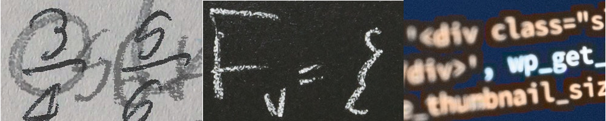

1C - rozszerzone treści nauczania z matematyki, fizyki, informatyki
Powinieneś wybrać klasę o takim nachyleniu przedmiotowym jeśli:
- omarzysz o studiach informatycznych, matematycznych, fizycznych, architekturze, budownictwie, automatyce, robotyce, budownictwie, elektrotechnice, transporcie morskim, astronomii, na takich uczelniach jak SGGW, AGH, Politechnika Warszawska i Politechnika Wrocławska, Politechnika Rzeszowska, Akademia Ekonomiczna;
- jesteś ciekawy laboratoryjnych zajęć na KUL-u z fizyki;
- marzysz, by zmierzyć się z najlepszymi w konkursach matematycznych, fizycznych iinformatycznych, np.: w Podkarpackim Konkursie Matematycznym im. Franciszka Leji, Ogólnopolskiej Olimpiadzie Fizycznej, w Ogólnopolskiej Olimpiadzie o Diamentowy IndeksAGH;
- chętnie pracujesz przy komputerze;
- w przyszłości chcesz przystąpić do egzaminu maturalnego z matematyki, fizyki, informatyki napoziomie rozszerzonym.
Przy rekrutacji do klasy 1Cprzedmioty punktowane to: język polski, matematyka, język obcy, historia/fizyka/biologia/geografia/chemia
Nabór odbywa się poza systemem elektronicznym.